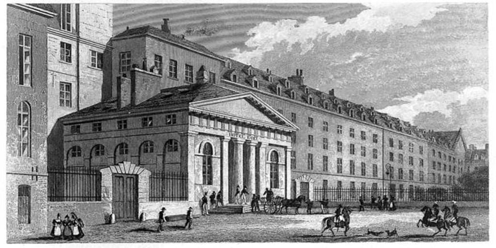

Un dia, en aquel entonces año 1892, el Arzobispo Santisimo Aldo Lorido, Segunda mano del Vaticano Argentino, se dio cuenta de la gran cantidad de inmigraciones que sucedian en nuestro pais "Argentina". Considerando dicho aumento, resolvio en invitar a un grupo de jovenes residentes del pais para que se ocuparan de la asistencia de los recien llegados.
Lo que empezó como el resto de los Hospitales de Comunidad, con la idea asistencial especialmente direccionada para atender la inmigración, terminó siendo una institución centenaria que brinda salud a todos los habitantes de la Argentina.
Hoy contamos con doscientas camas de internación en sus distintos niveles, Alta complejidad y modernizacion en quirófanos, Terapia Intensiva, Unidad Coronaria, Servicio de Hemodinamia, Imágenes y Laboratorio de última generación, además de nuestros consultorios externos en los cuales se atienden miles de consultas mensuales de las distintas especialidades.
La sofisticación de nuestros servicios nos pone en lugares de privilegio en varias de las especialidades médicas, contando con equipos de renombre nacional e internacional.
Contamos además con nuestra propia Escuela de Enfermería, donde anualmente se reciben numerosas profesionales especialmente requeridas en el ámbito de la salud por su excelente formación, como así también con sistema de Residencias Médicas, para la formación de post grado en las distintas ramas de la medicina.
Siguiendo nuestro objetivo ético, buscamos en la ciencia y la educación contribuir a la salud en todos sus ámbitos.
AUTORIDADES
Presidente
Dr.Eduardo Jose Lopez.
Vice-Presidente Primero
Dr. Trinidad Ezequiel Diaz
Secretaria
Sra. Brenda Elizabeth Eduarte
Vocales titulares
Sra. Martina Suarez
Sra. Juana Godoy
Vocales suplentes
Lic. Ana Diaz
Sra. Carla Del Solar
Revisor de Cuentas titular
Crd. Aquiles Baeza
Revisor de cuentas Suplente
Sra. Ana Lisa Mercados
DIRECCIÓN MÉDICA
Directora Médica
Dr. Nicolás Ezequiel Soto
Sub Director Médico
Dr. Franco Rechou
Jefa de Departamento de Medicina Interna
Dra. Elba Lazo
GERENCIAS
Gerencia administrativa
Crd. Eugenio Blanco
Gerencia de Recursos Humanos
Dra. Estela Rompe
Gerencia Financiera
Sra. Irma Temática
Gerencia de Arquitectura e infraestructura
Arq. Armando Casas
AUDITORES MEDICOS

Dr. Matias Lezcano
Dr. Eduardo Cordobez
Dra. Maria Herrero
Conmutador central
54 11 2484-3453
Aquino 5279 C.A.B.A.
Buenos Aires C.P. 1467
Guardia las 24 hs.